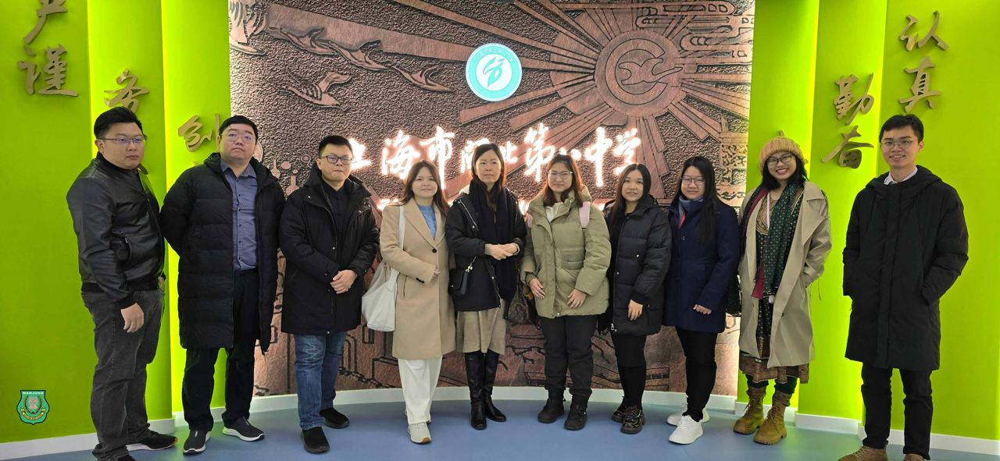
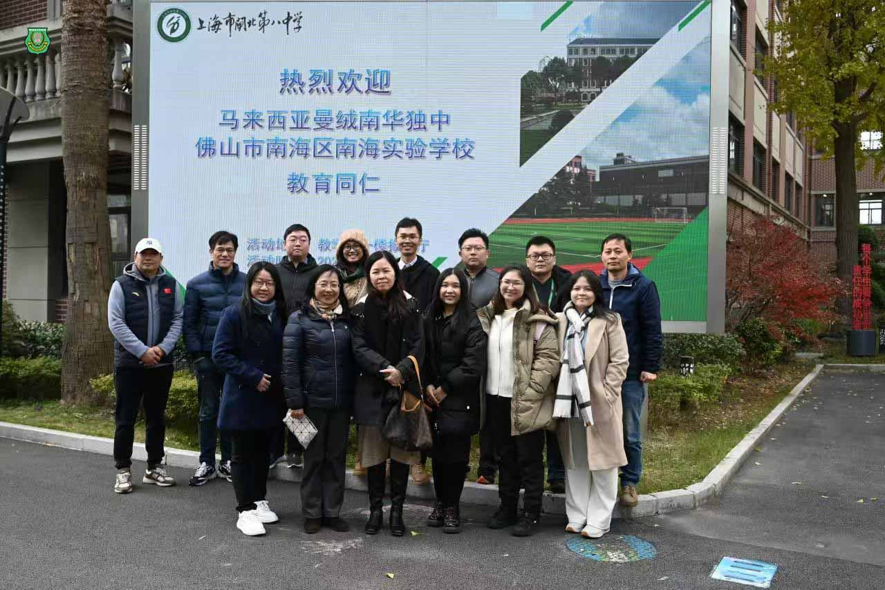
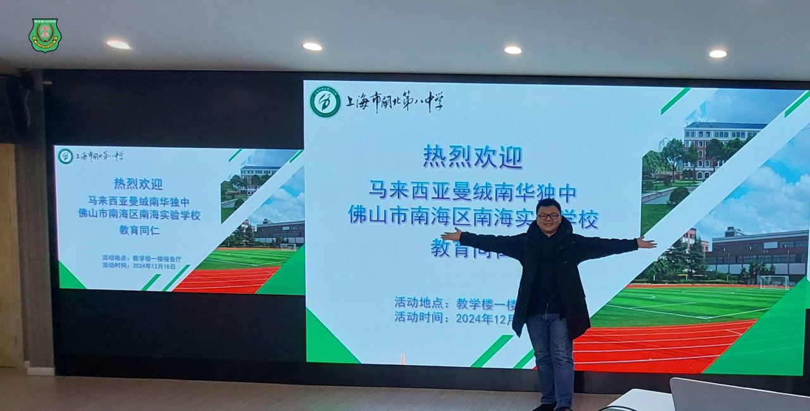
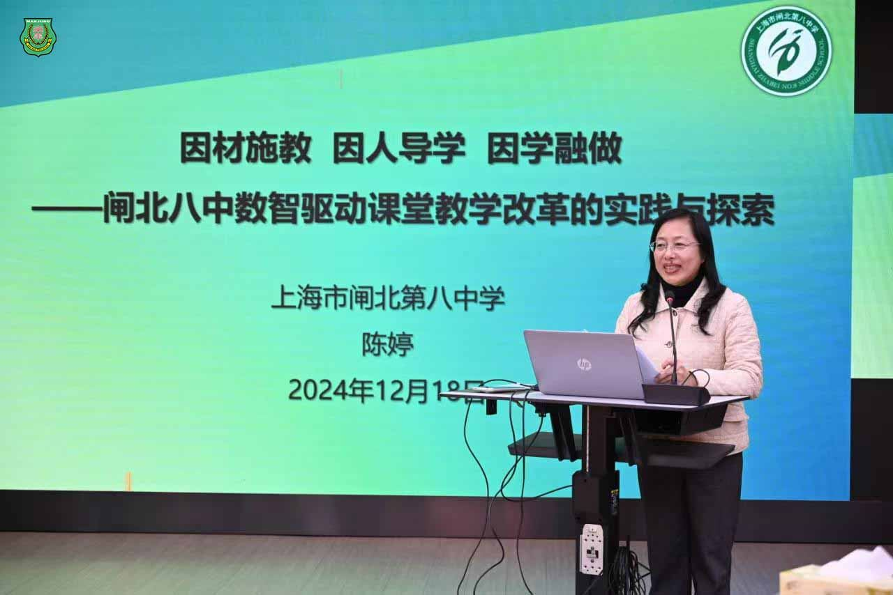
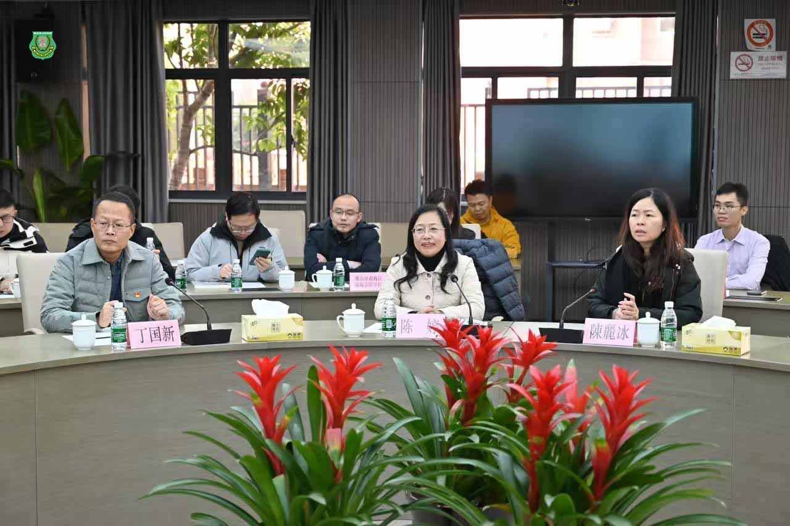
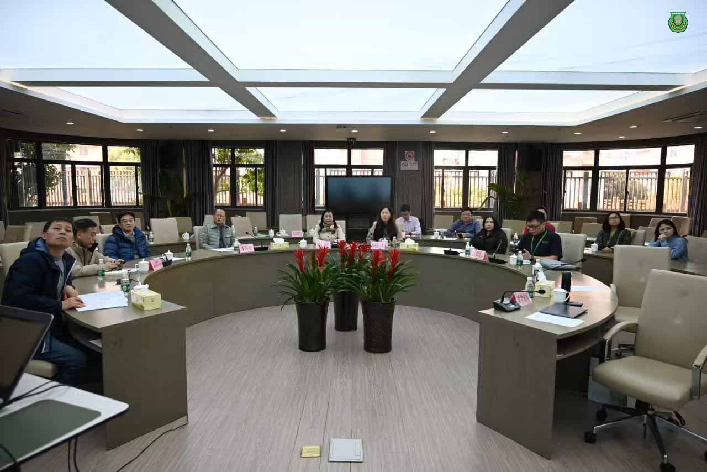

南华独中教育考察团赴上海取经
南华独中教育考察团赴上海取经
聚焦智慧教育与创新教学
南华独立中学校长陈丽冰博士日前率领各处室行政正副主任及科学科主任一行人，对上海多所重点院校进行为期数日的教育考察，深入了解当地智慧教育发展现况。
考察团首站来到上海市第八中学。在该校陈婷校长的主持下，双方就数字化教学资源建设、人工智能教学应用以及学生自适应学习等前沿课题展开深入交流。上海八中在智慧校园建设方面的成功经验，为南华独中的未来发展提供了宝贵借鉴。
随后，考察团访问了上海师范大学对外汉语学院。院长曹秀玲教授与团队就两校未来可能的建教合作方向进行了富有成效的探讨，为两校在师资培训、教学研究等领域的合作奠定了基础。
考察团的第三站则是参访了以科技创新见长的上海市风华初级中学,并由上海市中小学数字化实验系统研发中心主任暨风华中学原校长冯容士亲自接见。该校的DIS物理实验室令考察团印象深刻。这套先进的实验系统能够直观展示物理量的动态变化过程，不仅有助于学生理解抽象的物理概念，更为学生开展质疑和自主研究提供了充足空间，有效激发了学生的创新思维。
陈丽冰校长表示，此次上海之行收获颇丰。上海教育界在智慧教育建设、创新人才培养等方面的成功经验，将为南华独中的教育改革和发展提供重要参考。考察团将在返校后积极研究相关经验的本土化应用，助力学校教育质量的全面提升。





